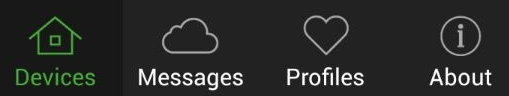
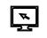
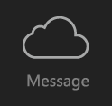
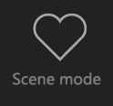

Dear user, Thank you for using our products, in order to make sure you can quickly and correctly operate our product, we make the mobile clients’ instruction. At first, please follow the instruction, correctly install our product and connect the network, go to our specified website and download the client application. After starting up the Android phone application, the main interface will appear the following menu: |

My device
Click in main interface, Select the camera type（other types need complete set of equipment）or click device name after successfully adding camera, enter into online monitor’s interface, functions as following:
From left to right are Monitor and Talkback, Snapshot , Start Recording , Resolution, Preset Position, Brightness, Contrast, Restore video parameter to factory settings, IR LED setting
From left to right are Pan cruise, Tilt cruise, Pan mirror image, Tilt mirror image；
1，Add device, Edit device
Enter “add device”, search through local area network(LAN),scanning device QR code, manually type in , need type in device name, type(default is camera, such as Cloud vision cool box, so select cloud vision cool box, such as cloud switch, just select cloud switch)、device ID、User、Password；
Edit device： Deletable device/editable device name、type、device ID、User、Password；
2，Start Previewing
3，Click device name on the main interface, enter the online monitor, start previewing；
4，Stop Previewing
Click the mobile return button, or click “List”；
5，PT Control
Access to the online monitor interface, when the state is controlling, then can click the left, right, up and down button to swipe the screen to control PT；
6，Audio Control
：Start monitoring：End monitoring
：Start/end talkback
7， Image quality settings
：Resolution setting, you can set the fluent, SD, HD.
8， Setting
Click enter into the setting interface, setting the device, the function menu show as below：
enter into the setting interface, setting the device, the function menu show as below：
：WIFI Setting ---Set up a device connected to the home or office wireless network, achieve wireless monitor
：FTP Setup---Setup FTP Server, Port, User ID, Password and Interval time.
：User Setting---setup Administrators and Operators’ user ID and Password, which achieve multi-user’s management.
Alarm setting---Setup motion detection，Alarm input.
Email Setting---Setup email sender and one or more receivers（more receivers need start from the first receiver）.
：SD Card Setup---Setup related parameter for SD Card Record and storage.
：AP parameter setting——Setup the AP SSID and password, authentication mode, type, subnet mask, start and end address.
：ONVIF_RTSP setting——setup ONVIF protocol state in accordance with NVR ONVIF、RTSP stream state ,RTSP User、RTSP password、RTSP port.
：DDN setting——Setup Device Dynamic DNS.
：Device Name set------Set up device name.
：Time setting---setup device’s time.
8、 9，Alarm setting
Click in setting interface,,Which can do intelligent setting for device alarm and achieve auto alert & push.
in setting interface,,Which can do intelligent setting for device alarm and achieve auto alert & push.
1）Motion detection：motion detect sensitivity range from 1 to 10.
2）Registration input GPIO protection：low level and high level for option.
3）Voice detection：High sensitivity, middle sensitivity, low sensitivity for option.
4）PIR alarm：can open PIR alarm; part of device have this function.
5）Alarm Trigger: Presets linkage alarm/IO Linkage alarm, Email alarm, TF card record, upload snapshot.
My message
Click in main interfaceenter into “message” interface，can view picture, local video , playback, view, obtain evidence for remote video.
Scene mode
Click in main interface  enter into “Scene mode” interface，this function is reserved.
About
Click in main interface enter into “about” interface，can custom setup Alarm sound setting、device operation Help、know about version information etc,function icon as following：
：System setting——Custom setup alarm voice.
：New function introduction——introduce software function use.
：Check and update——Check software version information.
：Email feedback——Feedback software technology problem email.
：Software version——Software version information.
：About—— Instruction for Mobile phone application.